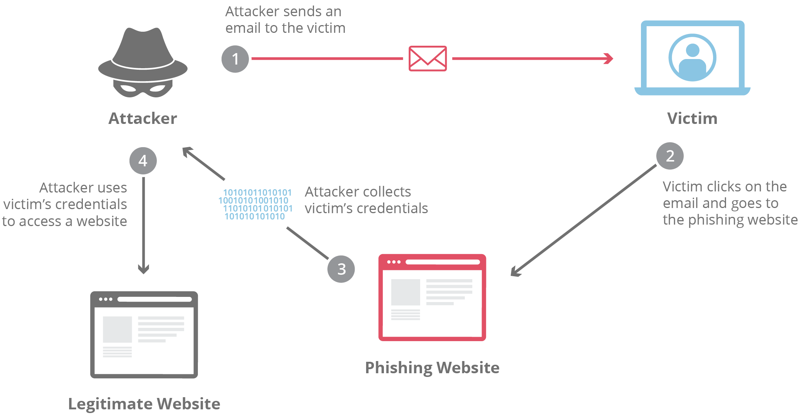

Phishing Attacks
What is a phishing attack?
“Phishing” refers to an attempt to steal sensitive information, typically in the form of usernames, passwords, credit card numbers, bank account information or other important data in order to utilize or sell the stolen information. By masquerading as a reputable source with an enticing request, an attacker lures in the victim in order to trick them, similarly to how a fisherman uses bait to catch a fish.
How is phishing carried out?
The most common examples of phishing are used to support other malicious actions, such as on-path attack and cross-site scripting attacks. These attacks typically occur via email or instant message, and can be broken down into a few general categories. It’s useful to become familiar with a few of these different vectors of phishing attacks in order to spot them in the wild.
Advanced-fee Scam
This common email phishing attack is popularized by the “Nigerian prince” email, where an alleged Nigerian prince in a desperate situation offers to give the victim a large sum of money for a small fee upfront. Unsurprisingly, when the fee is paid, no large sum of money ever arrives. The interesting history is that this type of scam has been occurring for over a hundred years in different forms; it was originally known in the late 1800s as the Spanish Prisoner scam, in which a con artist contacted a victim to prey on their greed and sympathy. The con artist is allegedly trying to smuggle out a wealthy Spanish prisoner, who will reward the victim handsomely in exchange for the money to bribe some prison guards.
This attack (in all its forms) is mitigated by not responding to requests from unknown parties in which money has to be given to receive something in return. If it sounds too good to be true, it probably is. A simple Google search on the theme of the request or some of the text itself will often bring up the details of the scam.
Account Deactivation Scam
By playing off the urgency created in a victim who believes an important account is going to be deactivated, attackers are able to trick some people into handing over important information such as login credentials. Here’s an example: the attacker sends an email that appears to come from an important institution like a bank, and they claim the victim’s bank account will be deactivated if they do not take action quickly. The attacker will then request the login and password to the victim’s bank account in order to prevent the deactivation. In a clever version of the attack, once the information is entered, the victim will be directed to the legitimate bank website so that nothing looks out of place.
This type of attack can be countered by going directly to the website of the service in question and seeing if the legitimate provider notifies the user of the same urgent account status. It’s also good to check the URL bar and make sure that the website is secure. Any website requesting a login and password that is not secure should be seriously questioned, and nearly without exception should not be used.
Website Forgery Scam
This type of scam is commonly paired with other scams such as the account deactivation scam. In this attack, the attacker creates a website that is virtually identical to the legitimate website of a business the victim uses, such as a bank. When the user visits the page through whatever means, be it an email phishing attempt, a hyperlink inside a forum, or via a search engine, the victim reaches a website which they believe to be the legitimate site instead of a fraudulent copy. All information entered by the victim is collected for sale or other malicious use.
In the early days of the Internet, these types of duplicate pages were fairly easy to spot due to their shoddy craftsmanship. Today the fraudulent sites may look like a picture-perfect representation of the original. By checking the URL in the web browser, it is usually pretty easy to spot a fraud. If the URL looks different than the typical one, this should be considered highly suspect. If the pages listed as insecure and HTTPS is not on, this is a red flag and virtually guarantees the site is either broken or a phishing attack.
Spear Phishing
This type of phishing is directed at specific individuals or companies, hence the term spear phishing. By gathering details or buying information about a particular target, an attacker is able to mount a personalized scam. This is currently the most effective type of phishing, and accounts for over 90% of the attacks.
Clone Phishing
Clone phishing involves mimicking a previously delivered legitimate email and modifying its links or attached files in order to trick the victim into opening a malicious website or file. For example, by taking an email and attaching a malicious file with the same filename as the original attached file, and then resending the email with a spoofed email address that appears to come from the original sender, attackers are able to exploit the trust of the initial communication in order to get the victim to take action.
Whaling
For attacks that are directed specifically at senior executives or other privileged users within businesses, the term whaling is commonly used. These types of attacks are typically targeted with content likely to require the attention of the victim such as legal subpoenas or other executive issues.
Another common vector of this style of attack is whaling scam emails that appear to come from an executive. A common example would be an email request coming from a CEO to someone in the finance department requesting their immediate help in transferring money. Lower-level employees are sometimes fooled into thinking the importance of the request and the person it’s coming from supersede any need to double-check the request’s authenticity, resulting in the employee transferring large sums of money to an attacker.